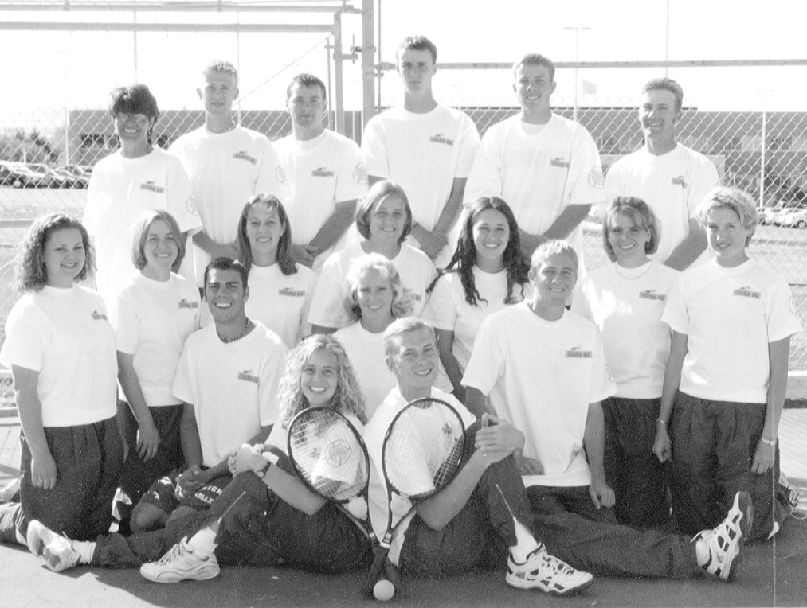
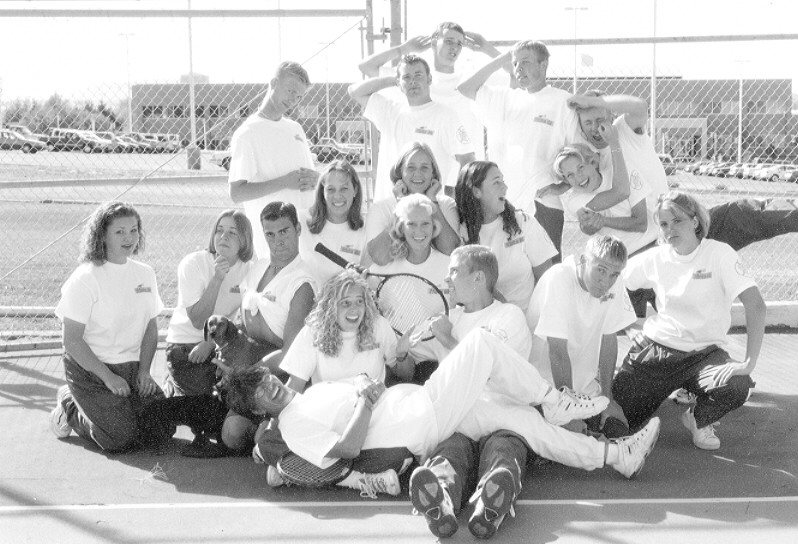
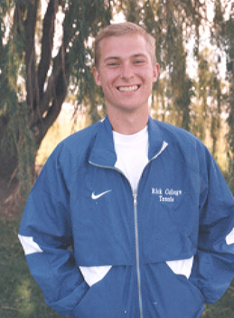
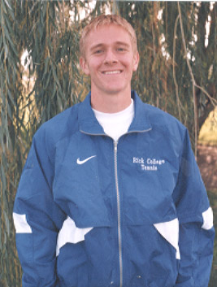
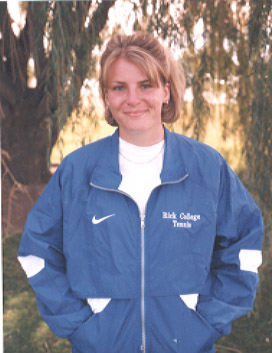
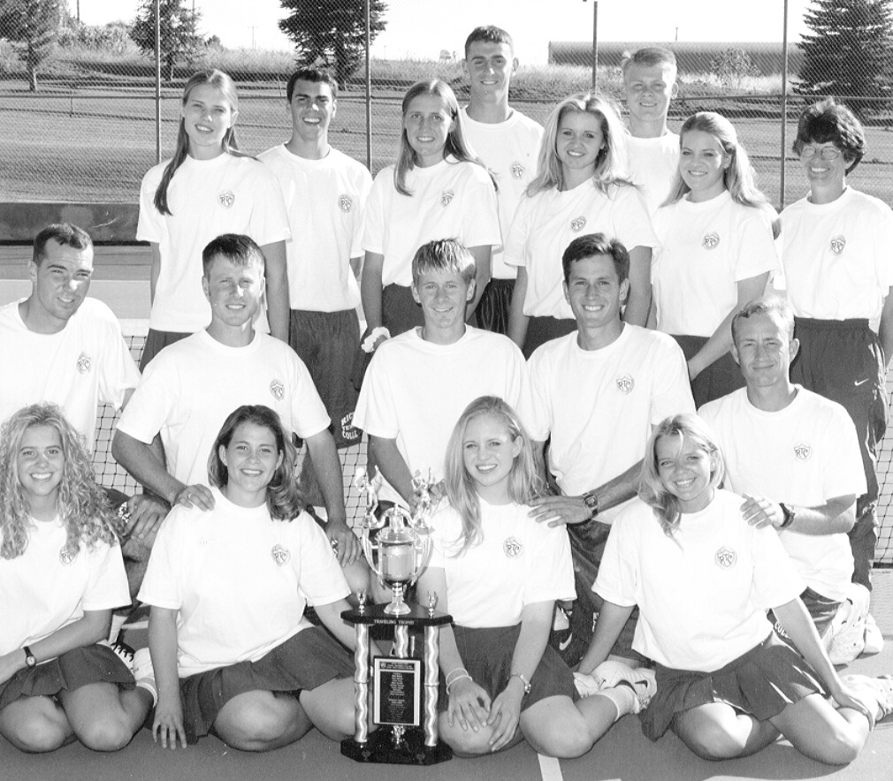
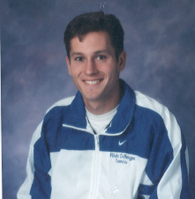
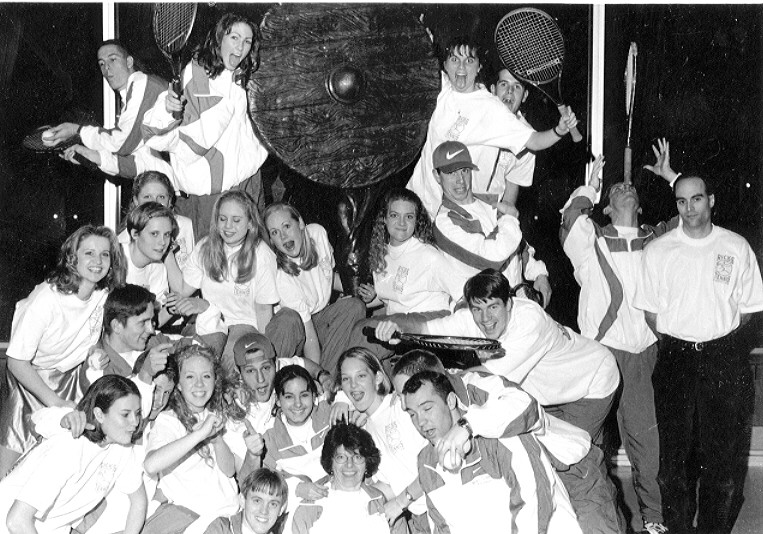

Men:------- Women:
Dan Albaugh------- Alisa Heitmann
Tim Thornton------- Camille Jenson
Jason Samuelian------- Maggie Daney
Brian Call------- Julie Call
K C Johnston------ Tiffany Thompson
Nate Sherrill------ Sara Madsen
Christain Brower------ Sarali Harrison
Dan Odell-------- Heather Tometich
Michelle Dean
Brian Dalton------ Cherie Bloss
Ryan Leet-------- Natalie Higham
Angela Griggs
Kari Lynn Osborne
Carlee Felt
Cami Nelson (Team Manager)
On September 9, 2000 the top six men and women traveled to Provo where they competed in a seeding tournament. College of Eastern Utah, Dixie, Ricks, Salt Lake Community College, Snow, & Utah Valley State College were all represented in the tournament. Each player from Ricks played 6 games for singles and 8 games for doubles, against the player/players in their division from each of the five other schools. Ricks won the tournament with 208 games won over Utah Valley with 180 and Snow with 119. Maggie Daney, our #1 Women's Singles, Camille Jenson, our #2 WS, Alisa Heitmann, our #3 WS, Dan Albaugh, our #2 Men's Singles, Julie Call and Tiffany Thompson our Women's Doubles, and Tim Thornton and K C Johnston, our Men's Doubles---all took first place in their divisions. Brian Call, our #3 MS tied for first. The team will travel to Provo again on the 23rd to compete in the team tournament.
Please read the team commitment letter thoroughly to help answer questions and
gain an understanding of our program.
Well, the season is over and we came out on top. We won the team championship 5-4 against one of the hardest fought matches in the history of tennis against Utah Valley. Winners were Brian Call, Men's #1, Dan Albaugh, Men's #2, Julie Call, Women's #1, Tim Thornton and K C Johnston, Men's Doubles, and Julie Call and Tiffany Thompson, Women's Doubles.
We also did very well in the individual championships. Julie Call and Tiffany Thompson romped the competition: 6-0, 6-0; 6-0,6-0; 6-0, 6-2. And those two games were to Rick's #2 women's doubles, Michelle Dean and Sarali Harrison who took second place in the tourney. Brian Call placed second in the tournament losing to Utah Valley. Alisa Heitman also placed second in women's singles. Our mixed team also took second in a three setter. They lost to a four year team from Utah Valley that have never lost a set in competition, so we were very proud of Sara Madsen and Nate Sherrill.
Commitment Letter
Now please understand, if we are going to be competitive and WIN
it will depend largely on your summer conditioning!
Jog for endurance and run sprints for speed*
Jump Rope for footwork*
Do Curl Ups for your serve*
Do Push Ups for upper body strength*
Do Lunges or Squats for lower body strength*
and
play--Play--PLAY--PLAY for the LOVE OF THE GAME!!!

The real personality of the 1999 team!

Brady Spencer -- Men's Captain 1999

Rachelle Larson -- Women's Captain 1999

Nathaniel Ivers -- 1999 Men's Singles Champion

Camille Jenson -- 2nd Place Women's Singles

1998 Region 18 Team Champions

Daniel Joseph Baird -- 1998 Men's Singles Champion
1998 Team Captain (currently player for Utah State University)

1997 Ricks College Tennis Team having a good time

1997 Men's Team (me and my son, Neil, on top)